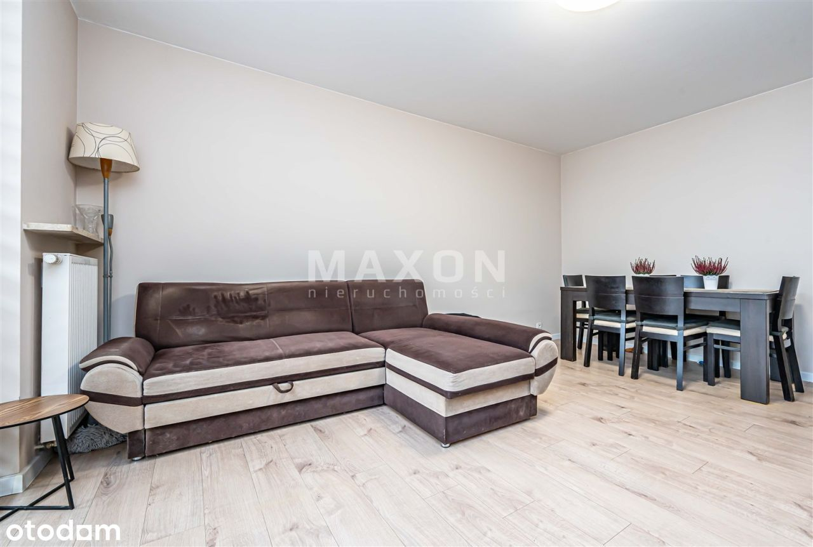
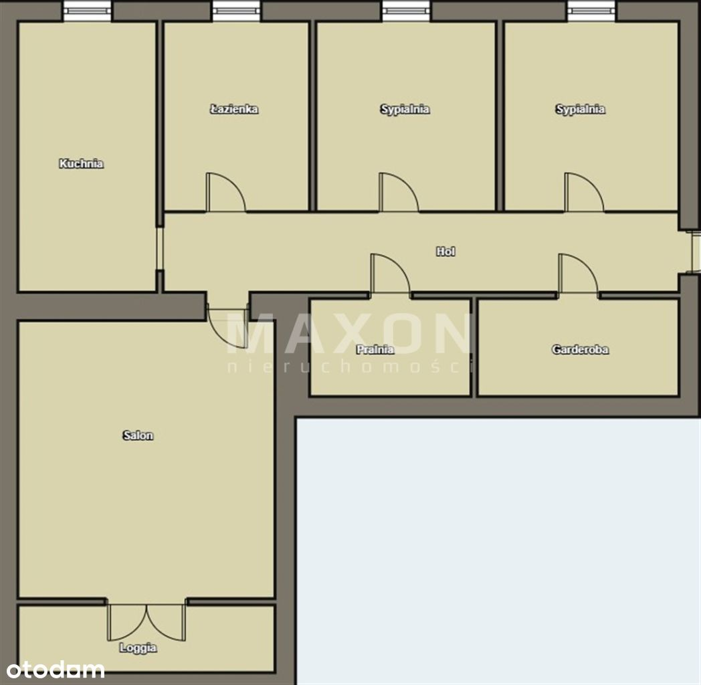
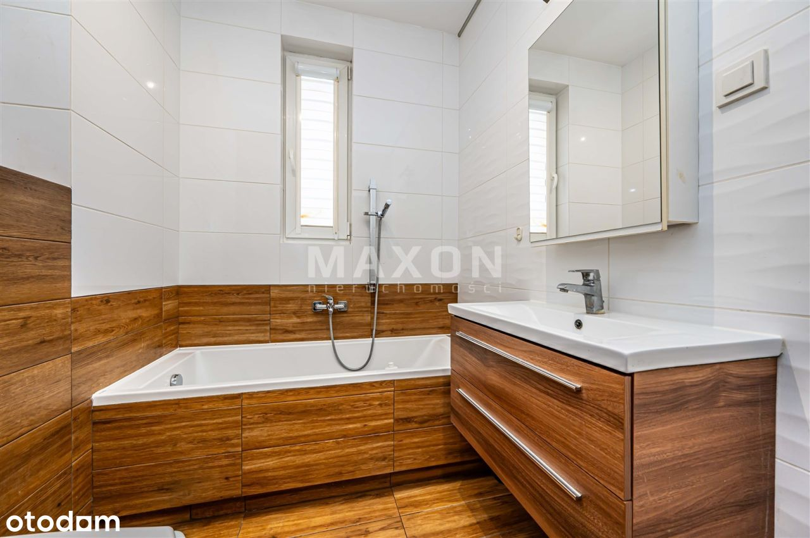
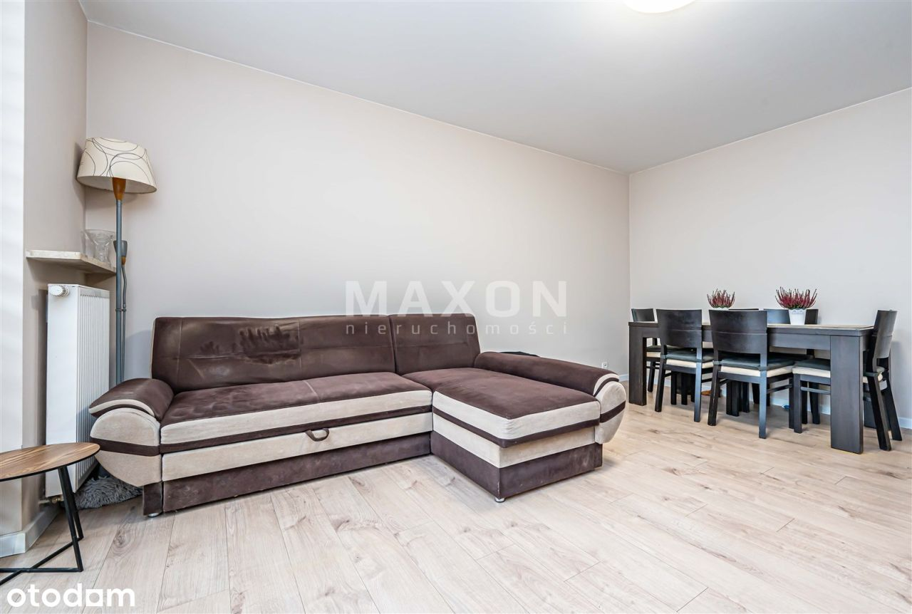
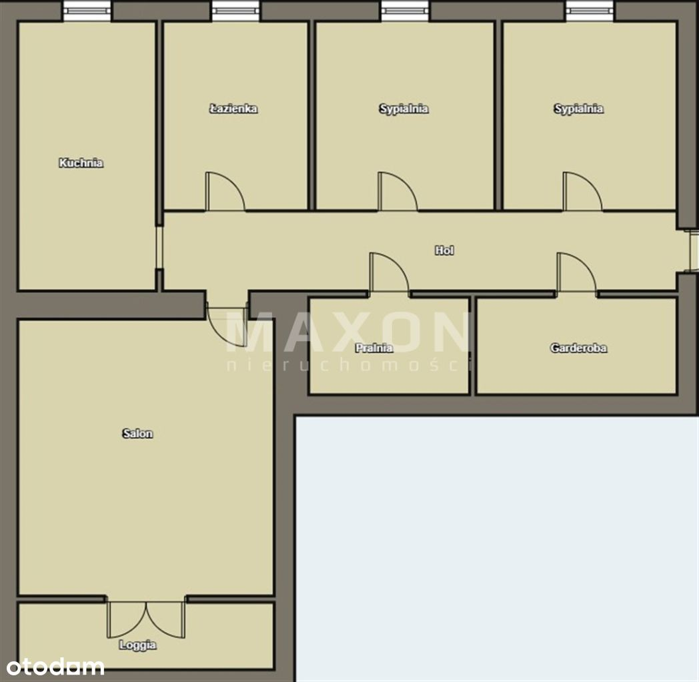
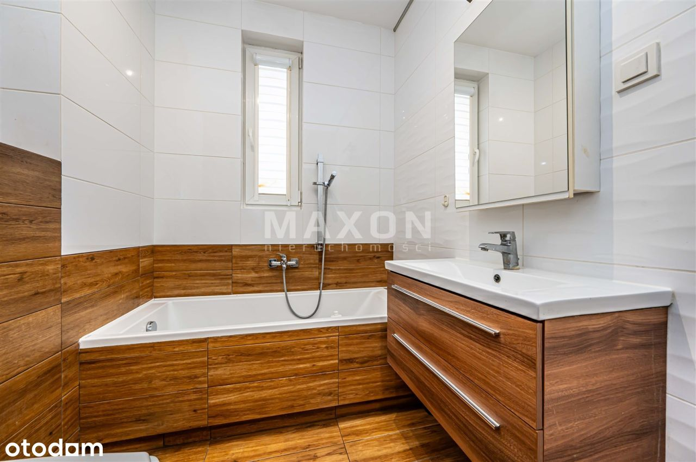

5Min.Pkp✨Loggia+Garaż✨2-Stronne✨ Słoneczne✨Cisza
ul. Pohulanka, Warszawa Targówek
1 190 000 PLN
68.78 m2
3 pokoje
3 piętro
Ogólny opis
Na sprzedaż komfortowe, dwustronne mieszkanie 3-pokojowe o powierzchni 68,78 mkw. , zlokalizowane na 3. piętrze w budynku z 2016 r. przy ul. Pohulanka na Warszawskim Targówku (MIASTECZKO WILNO).
Mieszkanie w bardzo dobrym stanie, gotowe do zamieszkania, idealne dla rodziny lub osób ceniących przestrzeń i wygodę.
Mieszkanie jest w pełni wyposażone - Meble w cenie mieszkania, dostępne od zaraz.
✔️ Salon 23 m² z wyjściem na loggię (6,37 mkw.)
✔️ Oddzielna, jasna kuchnia
✔️ 2 sypialnie
✔️ Garderoba
✔️ Łazienka + osobna toaleta/pralnia
✔️ Miejsce postojowe w garażu podziemnym (40 000 zł)
Budynek:
Budynek
Rok budowy: 2016
Stan: bardzo dobry
Winda i udogodnienia dla osób niepełnosprawnych
Ogrzewanie miejskie, ciepła woda z sieci
Kameralne osiedle, tylko 3 piętra
Lokalizacja:
Lokalizacja
Mieszkanie znajduje się w spokojnej części Targówka - (MIASTECZKO WILNO) ul. Pohulanka.
W najbliższej okolicy:
- sklepy, punkty usługowe, restauracje, szkoły i przedszkola,
- tereny zielone i miejsca do spacerów,
- szybki dojazd do centrum Warszawy komunikacją miejską, koleją lub samochodem.
English description:
General Description
For sale comfortable, two-sided 3-room apartment with an area of 68.78 sqm. , located on the 3rd floor in the building of 2016 at Pohulanka street in Warsaw Targówek ( WILNO estate).
Apartment in very good condition, ready to move in, ideal for a family or people who appreciate space and convenience.
✔️ Living room 23 sqm with exit to the loggia (6.37 sqm.)
✔️ Separate, bright kitchen
✔️ 2 bedrooms
✔️ Dressing room
✔️ Bathroom + separate toilet ( or laundry room )
✔️ Parking space in underground garage (40 000 PLN)
.
Building:
Building
Year of construction: 2016
Condition: very good
Elevator and disabled facilities
City heating, mains hot water
Cameral estate, only 3 floors
Location: Location
The apartment is located in a quiet part of Targowek - (WILNO) Pohulanka street.
In the immediate vicinity:
- shops, service outlets, restaurants, schools and kindergartens,
- green areas and places for walking,
- fast access to the center of Warsaw by public transport, train or car.
Podstawowe
Cena : 1 190 000 PLN
Powierzchnia : 68,78 mkw.
Liczba pokoi : 3
Piętro : 3
Cena za mkw. : 17 301,54 PLN
Stan lokalu : Bardzo dobry
Czynsz administracyjny : 1 000 PLN
Pomieszczenia
Typ mieszkania : Rozkładowe
Salon : 23 mkw.
Kuchnia : Oddzielna
Liczba łazienek : 1
Lb. oddzielnych toalet : 1
Garderoba : Tak
Powierzchnia dodatkowa
Liczba balkonów : 1
Balkon : Loggia,
Piwnica : Nie
Komórka : Nie
Ogród : Nie
Media i wyposażenie
Ogrzewanie : CO miejskie,
Ciepła woda : Wodociąg miejski,
Gaz : Nie
Miejsca parkingowe
Parking podziemny : 1
Cena za 1
Parking podziemny : 40 000 PLN
Budynek
Rok budowy : 2016
Stan budynku : Bardzo dobry
Materiał : Mieszany
Liczba pięter : 3
Winda : Tak
Udog. dla niepełnosprawnych : Tak
Opis
Wyposażenie kuchni : Kuchenka elektryczna, Lodówka, Meble, Okap, Piekarnik, Płyta indukcyjna,
Wyposażenie łazienek : Grzejnik drabinkowy, Pralka, Umywalka, Wanna, WC,
Nasze usługi świadczymy w oparciu o umowę pośrednictwa, która gwarantuje Państwu bezpieczeństwo transakcji oraz pełną opiekę naszego doradcy przez cały okres trwania współpracy. Za wykonaną usługę pobieramy wynagrodzenie zgodnie z warunkami uzgodnionymi w zawartej umowie (za wyjątkiem umów zawartych w programie 0%).
Prezentowane oferty nie stanowią oferty w rozumieniu Kodeksu Cywilnego. Staramy się, aby informacje dotyczące oferowanych obiektów były możliwie dokładne, kompletne i aktualne. Ze względu na okoliczności, iż informacje te pochodzą od osób trzecich i część z nich nie zawsze daje się zweryfikować, MAXON Nieruchomości Sp. z o.o. nie ponosi odpowiedzialności za ich dokładność, kompletność i aktualność
 
